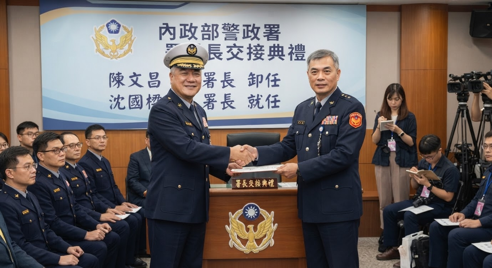

2018年5月14日
警政署新舊任署長交接典禮 陳文昌卸任 沈國樑接棒
警政署今（14）日上午舉行新舊任署長交接典禮， 歷經六年任期的署長陳文昌正式卸任， 由原副署長沈國樑接任，成為新任警政署長。

陳文昌（左）將署務印信交予沈國樑（右）。（中央社記者攝）
本社訊，警政署今日上午於署本部舉行新舊任署長交接典禮， 內政部長親臨監交。陳文昌自上任以來歷經六年， 任內推動多項基層警力改革方案，今日正式卸下重擔， 將於典禮後辦理退休。
交接典禮中，陳文昌致詞感謝同仁多年來的支持， 並特別提及沈國樑「一路從基層做起，行事穩健、值得信賴」， 期勉新任署長繼續帶領警政署為民服務。
沈國樑致詞時則表示，能有今日全靠「陳前署長多年的提拔栽培」， 未來將秉持陳文昌的施政理念，持續精進警政工作。 典禮結束後，雙方並與現場來賓合影留念。
陳文昌卸任後將正式退休，警政署表示將擇期舉辦歡送茶會。